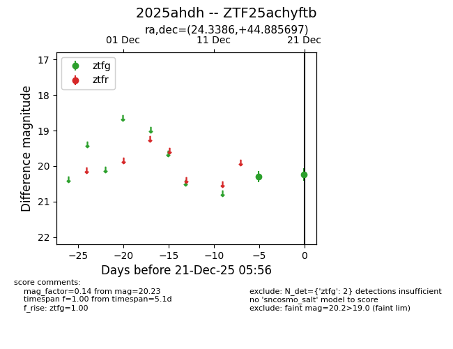
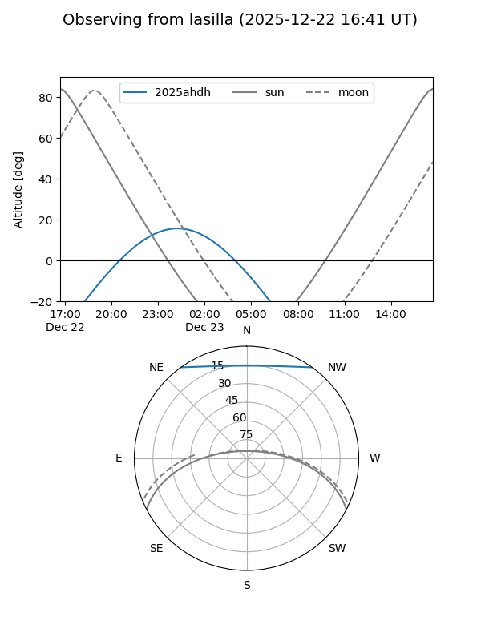
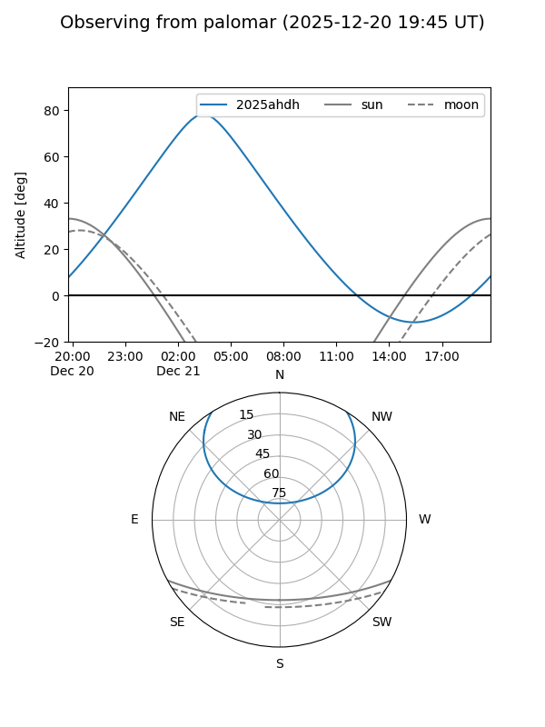

2025ahdh
Target 2025ahdh at 2025-12-22 14:03
Aliases and brokers:
FINK: fink-portal.org/ZTF25achyftb
Lasair: lasair-ztf.lsst.ac.uk/objects/ZTF25achyftb
ALeRCE: alerce.online/object/ZTF25achyftb
TNS: wis-tns.org/object/2025ahdh
YSE: ziggy.ucolick.org/yse/transient_detail/2025ahdh
alt names
ZTF25achyftb (ztf,fink_ztf)
2025ahdh (tns,yse)
Coordinates:
equatorial (ra, dec) = 24.3386,+44.88570
equatorial (HMS+DMS) = 01:37:21.27,+44:53:08.51
galactic (l, b) = (131.4213,-17.22784)
Flags:
Photometry:
last ztfg=20.23
2 ztfg detections
Lightcurve

Visibility


Additional plots